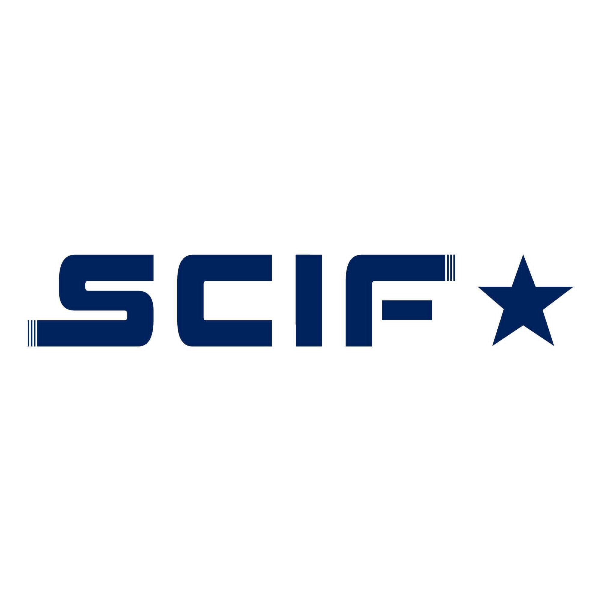

À propos de moi
Du diagnostic organisationnel au pilotage opérationnel, mon parcours en Management et Accompagnement du Changement m'a renforcé dans mon ambition de structurer, coordonner et faire avancer les projets. À travers mes différentes expériences professionnelles et parauniversitaires, j'ai développé une approche à la fois méthodique et humaine du changement, une approche que je souhaite aujourd'hui mettre au service de projets porteurs de sens.
Doté d'un Master d'excellence en management et accompagnement du changement, je suis motivé à m'engager pleinement dans des projets stimulants, en mettant à profit mes compétences en gestion de projet et en analyse des données pour contribuer de manière concrète et impactante.
Parcours académique
Master en Management et Accompagnement du Changement Parcours d'excellence
2024 - 2026
FSJES Aïn Chock - Université Hassan II
Licence d'excellence en Management et Accompagnement du Changement
Octobre 2023 - Juin 2024
Faculté des Sciences Juridiques, Économiques et Sociales - Ain Chock
Parcours axé sur le développement de compétences en management, avec une spécialisation en diagnostic organisationnel et gestion du changement.
Diplôme d'Études Universitaires Générales (DEUG) en Économie et Gestion
Octobre 2021 - Juin 2023
Faculté des Sciences Juridiques, Économiques et Sociales - Ain Chock
Formation généraliste couvrant les fondamentaux de l'économie, de la gestion et du droit, offrant une vision globale des dynamiques économiques et entrepreneuriales.
Baccalauréat en Sciences Économiques et Gestion
2021
Lycée Salaheddine Al Ayoubi
Expériences professionnelles

Stagiaire PFE – Société Chérifienne de Matériel Industriel et Ferroviaire
Février – Juin 2026
- Pilotage d'un projet de développement des compétences : planification, suivi des jalons clés et coordination des parties prenantes.
- Étude sur la capitalisation des savoirs tacites via l'élaboration d'un référentiel de compétences, en mobilisant une triangulation méthodologique (entretiens, observation, analyse documentaire), au service de la performance opérationnelle des ateliers.
Assistant Project Manager (Stage) – AGH Data Agency
Octobre – Décembre 2025
- Pilotage des plannings projet et feuilles de route de 2 projets de développement d'applications mobiles.
- Coordination transverse entre équipes techniques (Dev), fonctionnelles (BA) et créatives (Design UI/UX), assurant une communication fluide entre les 3 pôles.
- Mise en place d'indicateurs de performance (KPI) et de reporting hebdomadaire pour le PM et la direction.
Business Analyst (Stage) – AGH Data Agency
Septembre – Octobre 2025
- Étude de marché et analyse concurrentielle, priorisation fonctionnelle selon la méthode MoSCoW.
- Collecte, nettoyage et visualisation de données, tests de fiabilité des API.
Engagement associatif & parauniversitaire
Membre Fondateur – Rotaract FSJES AC
Janvier 2025 – Juillet 2025
Élaboration et mise en œuvre de stratégies de communication digitale. Création de vidéos promotionnelles pour renforcer la visibilité du club.
Co-fondateur – Projet 7NA M3AK
Novembre 2024 – Juillet 2025
- Pilotage de la stratégie de communication digitale et gestion de projet en partenariat avec le CIRA-ESS (Centre d'Inclusion et d'Incubation pour l'Économie Sociale et Solidaire) et la Plateforme des Jeunes de Lissasfa.
- Co-organisation d'une campagne de sensibilisation à l'entrepreneuriat et à l'ESS, et d'un hackathon sur l'innovation entrepreneuriale : coordination logistique, planification et gestion des imprévus.
Community Manager – Association Cap Esh (PFE)
Février 2024 – Juin 2024
Conception et diffusion de contenus pour promouvoir les actions de l'association dans le cadre du projet de fin d'études, avec impact mesurable sur la notoriété.
Compétences
Compétences métier
- Pilotage de projet
- Planification et suivi des jalons
- Gestion des risques
- Reporting et suivi de KPI
- Coordination d'équipes pluridisciplinaires
- Maîtrise des méthodes agiles : Scrum, Kanban
- Diagnostic organisationnel (projets académiques)
- Management stratégique (projets académiques)
- Conduite, gestion et accompagnement du changement (projets académiques)
- Marketing stratégique et digital
Compétences comportementales
- Communication
- Adaptabilité
- Travail en équipe
- Autonomie
Compétences techniques
- Analyse de données (Excel, SQL, SPSS)
- Élaboration et suivi de tableaux de bord décisionnels (Power BI)
- Initiation au développement web (HTML, CSS)
Outils numériques & Certifications
Outils numériques
 Jira
Jira Trello
Trello Excel
Excel Power BI
Power BI Odoo
OdooCertifications
- AI Starter Kit – ALX Morocco
- Foundations: Data, Data, Everywhere – Google
- Power BI – 365 Data Science
- Business Analyst Fundamentals – Udemy
- Rosetta Stone – Certificat d'achèvement (Anglais et Français)
- Rosetta Stone – Certificat d'achèvement (Français)
Langues
- Arabe natif
- Anglais C1
- Français B2
Centres d'intérêt
Sport, Volontariat, Voyage
Projets
Étude sur les initiatives bien-être d’Axa Maroc
Analyse des actions mises en place par Axa Maroc pour promouvoir le bien-être au travail (QVT), incluant politique RH, environnement de travail et initiatives RSE.
VoirProjet SQL & Power BI
Analyse complète de données avec création de tableaux de bord interactifs.
Voir sur GitHubContact
Email : oussamachaouki875@email.com
LinkedIn : linkedin.com/oussamachaouki